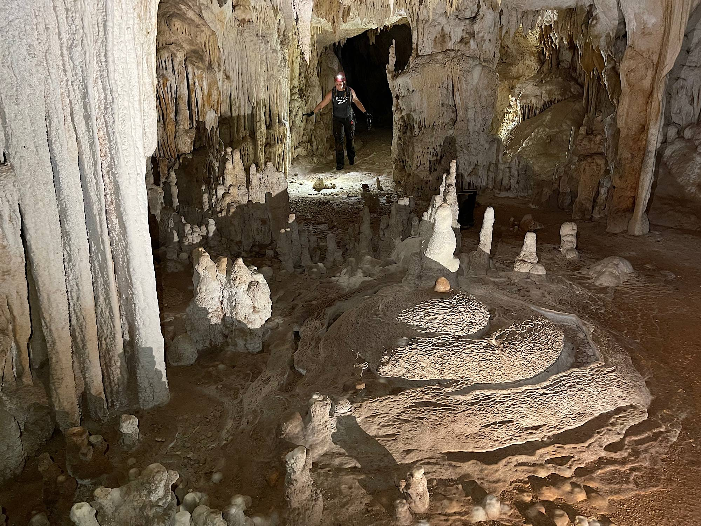

Minefield Caves
In a surprising turn of events, a group of amateur explorers stumbled upon a cave without random spots on the ground calling the place “Minefield Caves”. The group armed with flashlights, snacks, and questionable bravery reported that the cave walls were lined with strange, metallic stones that pulsed with light when touched. Local authorities were alerted after a loud rumbling was heard across town, prompting fears of an explosion. Instead, witnesses say the cave released a dazzling cloud of mist that drifted over the valley, temporarily turning the sky pink. Scientists are now investigating the site, while the explorers have already gone viral for what they are calling “the most colorful near disaster in history.”